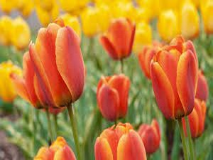

About Tulip:
Tulips (Tulipa) form a genus of spring-blooming perennial herbaceous bulbiferous geophytes (having bulbs as storage organs). The flowers are usually large, showy and brightly colored, generally red, pink, yellow, or white (usually in warm colors). They often have a different colored blotch at the base of the tepals (petals and sepals, collectively), internally. Because of a degree of variability within the populations, and a long history of cultivation, classification has been complex and controversial. The tulip is a member of the lily family, Liliaceae, along with 14 other genera, where it is most closely related to Amana, Erythronium and Gagea in the tribe Lilieae. There are about 75 species, and these are divided among four subgenera. The name "tulip" is thought to be derived from a Persian word for turban, which it may have been thought to resemble. Tulips originally were found in a band stretching from Southern Europe to Central Asia, but since the seventeenth century have become widely naturalised and cultivated (see map). In their natural state they are adapted to steppes and mountainous areas with temperate climates. Flowering in the spring, they become dormant in the summer once the flowers and leaves die back, emerging above ground as a shoot from the underground bulb in early spring.
Lilium (members of which are true lilies) is a genus of herbaceous flowering plants growing from bulbs, all with large prominent flowers. Lilies are a group of flowering plants which are important in culture and literature in much of the world. Most species are native to the temperate northern hemisphere, though their range extends into the northern subtropics. Many other plants have "lily" in their common name but are not related to true lilies.Lilium (members of which are true lilies) is a genus of herbaceous flowering plants growing from bulbs, all with large prominent flowers. Lilies are a group of flowering plants which are important in culture and literature in much of the world. Most species are native to the temperate northern hemisphere, though their range extends into the northern subtropics. Many other plants have "lily" in their common name but are not related to true lilies.Lilium (members of which are true lilies) is a genus of herbaceous flowering plants growing from bulbs, all with large prominent flowers. Lilies are a group of flowering plants which are important in culture and literature in much of the world. Most species are native to the temperate northern hemisphere, though their range extends into the northern subtropics. Many other plants have "lily" in their common name but are not related to true lilies.Lilium (members of which are true lilies) is a genus of herbaceous flowering plants growing from bulbs, all with large prominent flowers. Lilies are a group of flowering plants which are important in culture and literature in much of the world. Most species are native to the temperate northern hemisphere, though their range extends into the northern subtropics. Many other plants have "lily" in their common name but are not related to true lilies.Lilium (members of which are true lilies) is a genus of herbaceous flowering plants growing from bulbs, all with large prominent flowers. Lilies are a group of flowering plants which are important in culture and literature in much of the world. Most species are native to the temperate northern hemisphere, though their range extends into the northern subtropics. Many other plants have "lily" in their common name but are not related to true lilies.Lilium (members of which are true lilies) is a genus of herbaceous flowering plants growing from bulbs, all with large prominent flowers. Lilies are a group of flowering plants which are important in culture and literature in much of the world. Most species are native to the temperate northern hemisphere, though their range extends into the northern subtropics. Many other plants have "lily" in their common name but are not related to true lilies.
Originally growing wild in the valleys of the Tian Shan Mountains, tulips were cultivated in Constantinople as early as 1055. By the 15th century, tulips were among the most prized flowers; becoming the symbol of the Ottomans.[2] While tulips had probably been cultivated in Persia from the tenth century, they did not come to the attention of the West until the sixteenth century, when Western diplomats to the Ottoman court observed and reported on them. They were rapidly introduced into Europe and became a frenzied commodity during Tulip mania. Tulips were frequently depicted in Dutch Golden Age paintings, and have become associated with the Netherlands, the major producer for world markets, ever since. In the seventeenth century Netherlands, during the time of the Tulip mania, an infection of tulip bulbs by the tulip breaking virus created variegated patterns in the tulip flowers that were much admired and valued. While truly broken tulips do not exist anymore, the closest available specimens today are part of the group known as the Rembrandts – so named because Rembrandt painted some of the most admired breaks of his time.[3]
Tulipanin is an anthocyanin found in tulips. It is the 3-rutinoside of delphinidin. The chemical compounds named tuliposides and tulipalins can also be found in tulips and are responsible for allergies.[11] Tulipalin A, or α-methylene-γ-butyrolactone, is a common allergen, generated by hydrolysis of the glucoside tuliposide A. It induces a dermatitis that is mostly occupational and affects tulip bulb sorters and florists who cut the stems and leaves.[12] Tulipanin A and B are toxic to horses, cats and dogs.[13] The colour of a tulip is formed from two pigments working in concert; a base colour that is always yellow or white, and a second laid-on anthocyanin colour. The mix of these two hues determines the visible unitary colour. The breaking of flowers occurs when a virus suppresses anthocyanin and the base colour is exposed as a streak.[3]